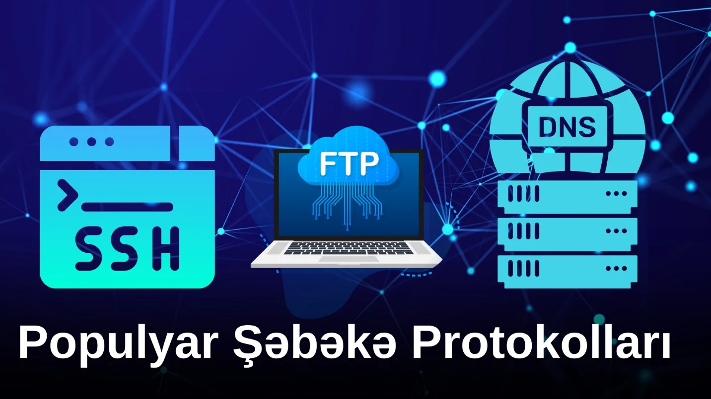

Populyar Şəbəkə Protokolları

Bu yazımda sizlərə IT sahəsində ən çox eşidəcəyiniz məşhur şəbəkə protokollarından bir neçəsi barədə bəhs edəcəm.
| Protokol | Tam adı | Qısaca |
|---|---|---|
| SSH | Secure Shell | Təhlükəsiz uzaqdan giriş |
| UDP | User Datagram Protocol | Sürətli, zəmanətsiz ötürmə |
| TCP | Transmission Control Protocol | Etibarlı, ardıcıl ötürmə |
| DNS | Domain Name System | Ad → IP ünvanı |
| FTP | File Transfer Protocol | Fayl ötürmə (21; SFTP — 22) |
| ICMP | Internet Control Message Protocol | Diaqnostika, ping |
SSH
SSH (Secure Shell) şəbəkədə məhsuldar və təhlükəsiz bağlantılar təmin edən bir şəbəkə protokoludur. SSH bir kompüterdən digərinə məlumat ötürmək və ya hər hansı bir sistemə uzaqdan giriş etmək üçün istifadə olunur. SSH şifrələmə və autentifikasiya texnologiyaları ilə məlumatların təhlükəsizliyini təmin edir.
SSH ilə biz, məsələn, kompüterimizdən Cisco router-ə uzaqdan qoşulub onu CLI ilə komandalarla idarə edə bilərik. SSH Telnet-ə nisbətən trafiki şifrələdiyi üçün daha təhlükəsiz hesab olunur.
UDP və TCP
UDP
UDP (User Datagram Protocol) sadə məlumatların ötürülməsini təmin edən sürətli bir şəbəkə protokoludur. TCP-dən fərqli olaraq, məlumat ötürərkən səhvləri düzəltmə və sıralama zəmanəti vermir. Bu da UDP-ni aşağı gecikmə müddəti tələb edən video, onlayn oyunlar və VoIP kimi tətbiqlər üçün ideal edir.
TCP
TCP (Transmission Control Protocol) internet üzərindən etibarlı və ardıcıl məlumat ötürülməsini təmin edən bir kommunikasiya protokoludur. TCP məlumat paketlərinin düzgün çatmasını təmin etmək üçün səhvlərin aşkarlanması və düzəldilməsi, paketlərin yenidən sıralanması kimi mexanizmlərdən istifadə edir. Bu, TCP-ni veb səhifələrin yüklənməsi, e-poçt göndərilməsi və fayl ötürülməsi kimi dəqiq məlumat ötürülməsi tələb edən tətbiqlər üçün ideal edir.
DNS
DNS (Domain Name System) internet üzərində domen adlarını IP ünvanlarına çevirən (və ya tam tərsi) bir sistemdir. İnsanların oxuya biləcəyi domen adlarını (məsələn, pits.az) kompüterlərin anladığı IP ünvanlarına (məsələn, 192.0.2.1) çevirərək internet üzərindən məlumatların düzgün istiqamətlənməsini təmin edir. DNS veb saytlarına və onlayn xidmətlərə asan və sürətli giriş imkanı yaradır.
FTP
FTP (File Transfer Protocol) faylların bir kompüterdən digərinə şəbəkə üzərində (internet) ötürülməsini təmin edən bir şəbəkə protokoludur. FTP faylların yüklənməsi və endirilməsi, məlumatlara giriş və onları idarə etmək üçün asan və effektiv bir yol təqdim edir. Bir çox hosting xidmətləri və veb serverlər FTP-ni saytın fayllarını idarə etmək üçün istifadə edir.
FTP 21 portu üzərindən işləyir, daha təhlükəsiz versiyası olan SFTP isə 22 portu ilə.
ICMP
ICMP (Internet Control Message Protocol) internet protokolları üzərində xəbərdarlıq və diaqnostika mesajlarının göndərilməsini təmin edən bir protokoldur. ICMP şəbəkədəki qarşılıqlı əlaqədə və problem həllində kömək edir. Məsələn, ping icrası və şəbəkə tərəfindən qəbul olunmuş paketlər barədə məlumat almaq — daha çox troubleshooting üçün istifadə olunur.
Biz CMD-də ping 8.8.8.8 yazmaqla internet (WAN) bağlantımızı yoxlaya bilərik.